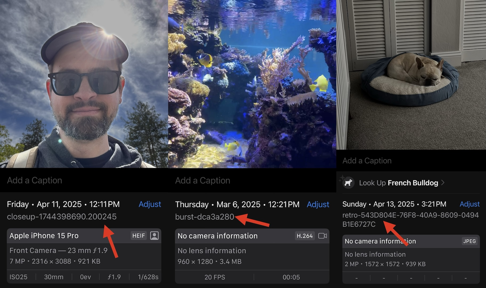

Storing custom metadata in PHAssets
PHPhotoLibrary is a powerful resource that lets you interact with one of iOS’ most vital components as a developer. We’re lucky to have it compared with a lot of other OS features that provide little or no developer access.
In the past I’ve wanted to add small bits of custom information to PHAssets, however PHAsset doesn’t provide a way to do this. As a workaround you could add custom Exif or video metadata to the asset at write time, then load the asset, extract that data, and parse it at read time, but that could be relatively slow since fetching PHAsset resource data can be iCloud-backed. Additionally, if downscaled data is returned from PHAsset, that metadata could be stripped. I wanted a quick way to stash a small amount of information in PHAssets.
What I found is PHAssetResource. PHAssetResource can be used when writing PHAssets to add fine-grained file representations of assets, but there’s a field within it that can be used to add arbitrary strings: the originalFilename. You can set the original filename to whatever you’d like like so
PHAssetCreationRequest *creationRequest = [PHAssetCreationRequest creationRequestForAsset];
PHAssetResourceCreationOptions *options = [PHAssetResourceCreationOptions new];
options.originalFilename = /*Filename of your choice, including custom info*/;
[creationRequest addResourceWithType:... data:... options:options];
Note: I recommend using the correct file extension for whatever type your using when setting originalFilename as mismatches can lead the Photos framework to fail.
And you can get the original filename from a PHAsset without loading the entire data from the asset.
for (PHAssetResource *const resource in [PHAssetResource assetResourcesForAsset:asset]) {
NSString *originalFilename = resource.originalFilename;
// Use originalFilename
}
PHAssetResource seems to be a part of PHAsset’s metadata, so it doesn’t require an additional load of the full underlying data to retrieve. It’s quick.
Here’s how I’m leveraging this:
- Close-up includes IDs in filenames when writing to
PHPhotoLibraryso that I can later tell if the photo has already been written and skip re-writing it in certain cases. - Burst includes a hash of the params used to create media in filenames so that I can reuse assets previously saved to the photo library instead of generating new ones.
- Retro includes photo IDs in filenames so we can count photos that are uploaded then saved to the local device as “already uploaded” instead of as new assets.

If you’re looking to store a bit of extra info in PHAssets this could be a great way to do it!